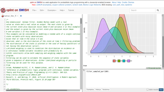
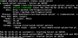
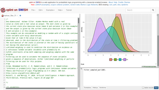
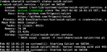

Next: Demonstrations, Previous: Top, Up: Top [Contents]
The purpose of this repository is to handle the creation of serveral packages and helpers in order to install Cplint1 on SWISH2 with an Rserve3 environment, as well as the "vanilla" version of SWISH.
SWISH relies on SWI Prolog4, a prolog interpteter.
 



In order to understand this documentation correctly some terminology used here must be explained.
< and > means pseudocode.
# means that the command must be executed by root.
$ means that the command must be executed by the current user.
When you see something like the following, it represents a directory listing of
the first named (head) directory. These representations are generated from
$ tree --charset=ascii -d <dirname>.
common/ |-- rserve-sandbox |-- swish `-- swish-cplint